ANÁLISIS ECONÓMICO FINANCIERO
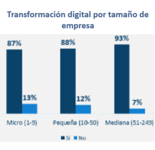
TECNOLOGÍA Y NEGOCIOS
La tecnología surge con la aplicación de la ciencia (conjunto de conocimientos) para la solución de problemas, influyendo en los negocios con invenciones e innovaciones. La invención es la creación de un bien (producto o proceso), la innovación es el mejoramiento del bien.
| Industria 1.0 (1775) | Industria 2.0 (1870) | Industria 3.0 (1980) | Industria 4.0 (2000) |
|---|---|---|---|
| Máquina de vapor. | Petróleo y energía. | Robótica industrial. | Internet. |
| Mecanización. | Producción en serie. | Automatización industrial. | Digitalización y alta velocidad. |
| Favorece el PIB. | Menos costos productivos. | Integración mundial del comercio. | Uso de nuevas tecnologías. |
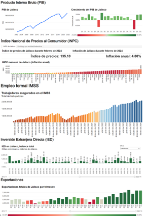
INDICADORES ECONÓMICOS
Los indicadores económicos son datos estadísticos que sirven para entender e interpretar la realidad económica a través de su análisis.
| •PIB | El Producto Interno Bruto (PIB) mide la evolución económica de un país a través de la fórmula siguiente: PIB = Consumo + Inversión + Gasto público + (Exportaciones - Importaciones). |
| •Inflación | La inflación es el aumento generalizado en los precios por un periodo de tiempo prolongado, la fórmula de la tasa de inflación (%) es: Tasa = (IPC año 1 - IPC año 0 / IPC año 0) * 100. |
| •Desempleo | Es el número de trabajadores registrados ante el IMSS y STPS. Por otro lado, la fórmula de la tasa de desempleo es: Tasa = (N° desempleados / Población activa) * 100. |
| •IED | La Inversión Extranjera Directa (IED) consiste en trasferir recursos a una empresa ubicada en otro país. La fórmula es: IED = (IED como % del PIB * Tipo de Cambio / PIB ) * 100. |
| •Balanza comercial | Las balanza comercial mide la relación entre las exportaciones e importaciones, su formula siguiente: Balanza Comercial = Exportaciones - Importaciones. |
FLUJO CIRCULAR DE LA ECONOMÍA
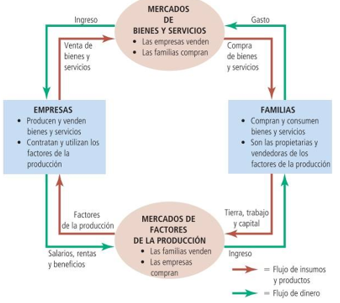
Es un modelo económico que refleja la actividad económica explicando el comportamiento y la relaciones entre agentes económicos dentro de un mercado.
Agentes económicos.
Tipos de mercado.
Modelos del Flujo Circular.
DIFERENCIAS ENTRE MICROECONOMÍA Y MACROECONOMÍA
}| Microeconomía | Macroeconomía | |
|---|---|---|
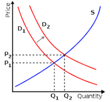 |
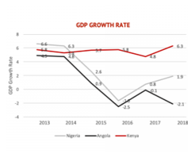 |
|
| Es el análisis de la conducta y de las decisiones que toman los consumidores en carácter de demandantes y las empresas en calidad de productores y/o oferentes, en relación con su mercado y la influencia del Gobierno. Estudia precios, cantidades y mercados individuales. | Es el análisis de la economía en su conjunto a través de las fuerzas que afectan a los consumidores y a las empresas. Estudia agregados económicos a nivel nacional como: el empleo, la renta, la inversión, el consumo y la racionalización de recursos económicos. |
OFERTA Y DEMANDA
| Oferta | Demanda | |
|---|---|---|
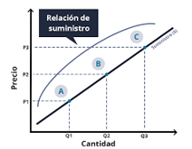 |
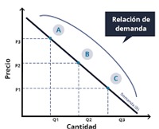 |
|
| La ley de la oferta se refiere a la cantidad ofrecida por una empresa en relación con la cantidad a producir de dicho producto o servicio, es decir, cuando el precio de un producto incrementa, la cantidad ofrecida aumentará igualmente; por otro lado, si el precio decrece la cantidad ofrecida disminuye. La curva de la oferta posee una pendiente positiva o ascendiente. | La ley de la demanda establece que, si el precio de un producto y/o servicio es elevado, la cantidad demandada por los consumidores será menor; por otra parte, cuando el precio del producto disminuye la cantidad demandada incrementará. La curva de la demanda posee una pendiente negativa. |
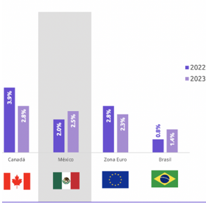
POLÍTICAS
| • La Política económica consiste en el establecimiento de medidas por el Gobierno, en materia económica y de finanzas públicas para regular el mercado, generar estabilidad en los precios, fomentar equidad y sostenibilidad entre los agentes económicos. |
| • La Política monetaria se refiere al incremento o reducción de las tasas de interés que existen en un mercado. |
| • La Política fiscal consiste en incrementar o disminuir los impuestos para que existan condiciones adecuadas de crecimiento en el futuro. |
| • El crecimiento económico es una valoración cuantitativa entre periodos en donde hay una cantidad mayor en el periodo actual(creció), aunque puede sesgarse por factores inflacionarios, es decir, se considera el crecimiento real (precios constantes) y no el nominal (inflación o deflación). |
CONTABILIDAD Y ÉTICA EMPRESARIAL
La importancia de la contabilidad radica en que sirve para el registro y control de operaciones financieras, así como para su visualización a través de estados financieros para la toma de decisiones empresariales.
La ética en una empresa es necesaria porque represente el conjunto de valores y normas de la cultura organizacional (misión y visión), representando su forma de actuar ante el entorno y compromiso con el desarrollo social en conjunto con los demás agentes económicos.
Asimismo, es importante regir las acciones organizacionales con ética porque en el mundo globalizado actual las empresas deben alinear sus objetivos y acciones con los 17 ODS (Objetivos de Desarrollo Sostenible) de la ONU (Organización de las Naciones Unidas)para la construcción de: un mundo sostenible e inclusivo, una economía circular y regenerativa, y una sociedad funcional.
ESTADOS FINANCIEROS
| Estado de Situación Financiera | Estado de Resultados Integral | |
|---|---|---|
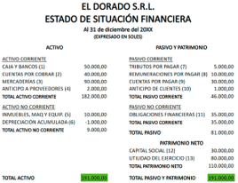 |
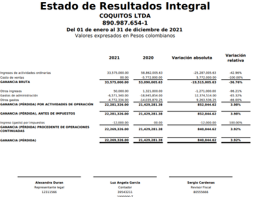 |
|
| • Es el reflejo de la situación financiera de una empresa: cantidad de bienes, propiedades, derechos, obligaciones, deudas y patrimonio en un periodo contable. | • Es la representación de las operaciones de una empresa: ingresos totales menos cotos y gastos para determinar la utilidad neta y el resultado integral del ejercicio. | |
| Estado de Flujo de Efectivo | Estado de Cambios en el Capital Contable | |
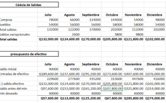 |
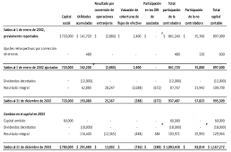 |
|
| • Es la visualización de las entradas y salidas de dinero sin considerar el aspecto inflacionario, es decir, brinda información específica sobre el origen y destino del efectivo. | • Es la visualización del valor de los activos de la empresa menos los pasivos para conocer los derechos que se poseen sobre los activos netos. |
RAZONES FINANCIERAS
Rendimiento sobre capital.
Apalancamiento 1.35
Utilidad por acción 8.25